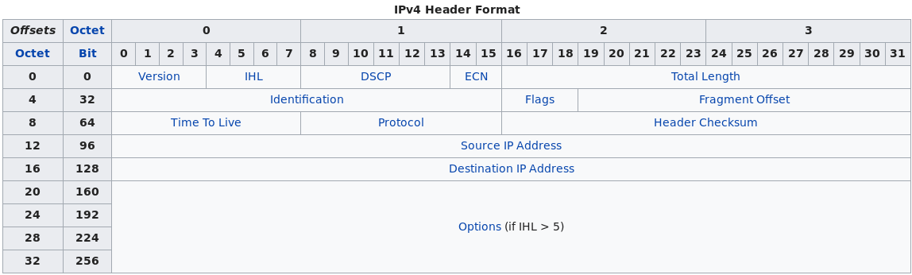

Version
The first header field in an IP packet is the four-bit version field. For IPv4, this is always equal to 4.
Internet Header Length (IHL)
The Internet Header Length (IHL) field has 4 bits, which is the number of 32-bit words. Since an IPv4 header may contain a variable number of options, this field specifies the size of the header (this also coincides with the offset to the data). The minimum value for this field is 5,[22] which indicates a length of 5 × 32 bits = 160 bits = 20 bytes. As a 4-bit field, the maximum value is 15 words (15 × 32 bits, or 480 bits = 60 bytes).
Differentiated Services Code Point (DSCP)
Originally defined as the type of service (ToS), this field specifies differentiated services (DiffServ) per RFC 2474 (updated by RFC 3168 and RFC 3260). New technologies are emerging that require real-time data streaming and therefore make use of the DSCP field. An example is Voice over IP (VoIP), which is used for interactive voice services.
Explicit Congestion Notification (ECN)
This field is defined in RFC 3168 and allows end-to-end notification of network congestion without dropping packets. ECN is an optional feature that is only used when both endpoints support it and are willing to use it. It is effective only when supported by the underlying network.
Total Length
This 16-bit field defines the entire packet size in bytes, including header and data. The minimum size is 20 bytes (header without data) and the maximum is 65,535 bytes. All hosts are required to be able to reassemble datagrams of size up to 576 bytes, but most modern hosts handle much larger packets. Sometimes links impose further restrictions on the packet size, in which case datagrams must be fragmented. Fragmentation in IPv4 is handled in either the host or in routers.
Identification
This field is an identification field and is primarily used for uniquely identifying the group of fragments of a single IP datagram. Some experimental work has suggested using the ID field for other purposes, such as for adding packet-tracing information to help trace datagrams with spoofed source addresses,[23] but RFC 6864 now prohibits any such use.
Flags
A three-bit field follows and is used to control or identify fragments. They are (in order, from most significant to least significant): - bit 0: Reserved; must be zero.[note 1]
- bit 1: Don't Fragment (DF)
- bit 2: More Fragments (MF)
If the DF flag is set, and fragmentation is required to route the packet, then the packet is dropped. This can be used when sending packets to a host that does not have resources to handle fragmentation. It can also be used for path MTU discovery, either automatically by the host IP software, or manually using diagnostic tools such as ping or traceroute. For unfragmented packets, the MF flag is cleared. For fragmented packets, all fragments except the last have the MF flag set. The last fragment has a non-zero Fragment Offset field, differentiating it from an unfragmented packet.
Fragment Offset
The fragment offset field is measured in units of eight-byte blocks. It is 13 bits long and specifies the offset of a particular fragment relative to the beginning of the original unfragmented IP datagram. The first fragment has an offset of zero. This allows a maximum offset of (213 – 1) × 8 = 65,528 bytes, which would exceed the maximum IP packet length of 65,535 bytes with the header length included (65,528 + 20 = 65,548 bytes).
Time To Live (TTL)
An eight-bit time to live field helps prevent datagrams from persisting (e.g. going in circles) on an internet. This field limits a datagram's lifetime. It is specified in seconds, but time intervals less than 1 second are rounded up to 1. In practice, the field has become a hop count—when the datagram arrives at a router, the router decrements the TTL field by one. When the TTL field hits zero, the router discards the packet and typically sends an ICMP Time Exceeded message to the sender. The program traceroute uses these ICMP Time Exceeded messages to print the routers used by packets to go from the source to the destination.
Protocol
This field defines the protocol used in the data portion of the IP datagram. The Internet Assigned Numbers Authority maintains a list of IP protocol numbers as directed by RFC 790.
Header Checksum
The 16-bit IPv4 header checksum field is used for error-checking of the header. When a packet arrives at a router, the router calculates the checksum of the header and compares it to the checksum field. If the values do not match, the router discards the packet. Errors in the data field must be handled by the encapsulated protocol. Both UDP and TCP have checksum fields. When a packet arrives at a router, the router decreases the TTL field. Consequently, the router must calculate a new checksum.
Source address
This field is the IPv4 address of the sender of the packet. Note that this address may be changed in transit by a network address translation device.
Destination address
This field is the IPv4 address of the receiver of the packet. As with the source address, this may be changed in transit by a network address translation device.
Options
The options field is not often used. Note that the value in the IHL field must include enough extra 32-bit words to hold all the options (plus any padding needed to ensure that the header contains an integer number of 32-bit words). The list of options may be terminated with an EOL (End of Options List, 0x00) option; this is only necessary if the end of the options would not otherwise coincide with the end of the header. The possible options that can be put in the header are as follows:
Field Size (bits) Description
Copied 1 Set to 1 if the options need to be copied into all fragments of a fragmented packet.
Option Class 2 A general options category. 0 is for "control" options, and 2 is for "debugging and measurement". 1 and 3 are reserved.
Option Number 5 Specifies an option.
Option Length 8 Indicates the size of the entire option (including this field). This field may not exist for simple options.
Option Data Variable Option-specific data. This field may not exist for simple options. - Note: If the header length is greater than 5 (i.e., it is from 6 to 15) it means that the options field is present and must be considered.
- Note: Copied, Option Class, and Option Number are sometimes referred to as a single eight-bit field, the Option Type.
Packets containing some options may be considered as dangerous by some routers and be blocked.[24]
Data
The packet payload is not included in the checksum. Its contents are interpreted based on the value of the Protocol header field.
Some of the common payload protocols are:
Protocol Number Protocol Name Abbreviation
1 Internet Control Message Protocol ICMP
2 Internet Group Management Protocol IGMP
6 Transmission Control Protocol TCP
17 User Datagram Protocol UDP
41 IPv6 encapsulation ENCAP
89 Open Shortest Path First OSPF
132 Stream Control Transmission Protocol SCTP
See List of IP protocol numbers for a complete list.
0 1 2 3
0 1 2 3 4 5 6 7 8 9 0 1 2 3 4 5 6 7 8 9 0 1 2 3 4 5 6 7 8 9 0 1
+-+-+-+-+-+-+-+-+-+-+-+-+-+-+-+-+-+-+-+-+-+-+-+-+-+-+-+-+-+-+-+-+
| Source Port | Destination Port |
+-+-+-+-+-+-+-+-+-+-+-+-+-+-+-+-+-+-+-+-+-+-+-+-+-+-+-+-+-+-+-+-+
| Sequence Number |
+-+-+-+-+-+-+-+-+-+-+-+-+-+-+-+-+-+-+-+-+-+-+-+-+-+-+-+-+-+-+-+-+
| Acknowledgment Number |
+-+-+-+-+-+-+-+-+-+-+-+-+-+-+-+-+-+-+-+-+-+-+-+-+-+-+-+-+-+-+-+-+
| Data | |C|E|U|A|P|R|S|F| |
| Offset | Res. |W|C|R|C|S|S|Y|I| Window |
| | |R|E|G|K|H|T|N|N| |
+-+-+-+-+-+-+-+-+-+-+-+-+-+-+-+-+-+-+-+-+-+-+-+-+-+-+-+-+-+-+-+-+
| Checksum | Urgent Pointer |
+-+-+-+-+-+-+-+-+-+-+-+-+-+-+-+-+-+-+-+-+-+-+-+-+-+-+-+-+-+-+-+-+
| Options | Padding |
+-+-+-+-+-+-+-+-+-+-+-+-+-+-+-+-+-+-+-+-+-+-+-+-+-+-+-+-+-+-+-+-+
| data |
+-+-+-+-+-+-+-+-+-+-+-+-+-+-+-+-+-+-+-+-+-+-+-+-+-+-+-+-+-+-+-+-+
TCP Flags: CEUAPRSF and occur in the 14th byte of the TCP header
A: ACK
P: PSH